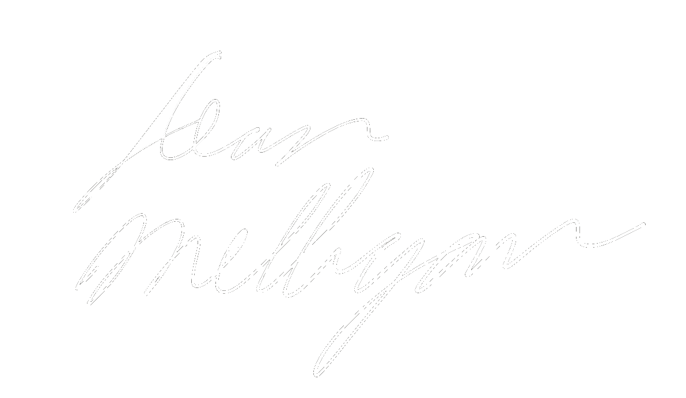

PacificMUN
February 23th - 25th 2018 | Pacific Model United Nations | Pinnacle Harbourfront Hotel
Register Now
Letter from the Secretary-General
Dear Delegates and Sponsor Teachers
It is my privilege and pleasure to welcome you to Pacific Model United Nations 2018. PacificMUN 2018 is our second year as a Hotel MUN conference and is taking place from February 23rd to 25th, 2018. After a successful inaugural conference last year, it is an honour for me and my secretariat team to have the opportunity to bring another successful and enjoyable conference for all involved.
Model UN, or just MUN, is a simulation of the United Nations, where students represent real countries and participate in the various committees of the UN. It may sound simple, but Model UN offers far more experiences that can be put onto a page. Everything from the passionate debate about world issues to making new friends at the social takes place at a MUN conference. MUN provides a setting like no other for young impassioned people to speak, learn, and connect; it certainly was for me.
Accessibility, Global-Involvement, Innovation
Accessibility regardless of situation, innovation in our conference, and promoting global involvement are the principles that we hope to run our conference by, as they are what a Model UN Conference represents to us. Personally, I want to create an experience to remember. There will be many Model UN conferences before and after this one, but what makes PacificMUN truly special is when delegates, sponsor teachers, staff, and secretariat remember it as a highlight of their year, Model UN career, or life.
MUN has already immeasurably developed my public speaking, teamwork and problemsolving skills; working for PacificMUN truely applies and displays what delegates can gain from participating in a MUN Conference. I hope that the countless hours of work our staff and secretariat team have done will culminate in a memorable and life changing experience for all of you February.
Finally
Alongside last year’s Secretary-General Bryan Buraga, this will be the third iteration of PacificMUN I am involved in. First as a delegate in 2015, then as the Under-Secretary-General of Committees in 2017, and finally as the Secretary-General in 2018. While my MUN career has taken me to delegating several conferences, staffing others, and even being secretariat at a few, PacificMUN will always be my home.
Sincerely,
Alan Milligan Secretary-General Pacific Model United Nations 2018
February 23 -25
Pinnacle Harbourfront Hotel Vancouver
A Starry Night Gala
Days
Hours
Minutes
Seconds
16
$175
EST +600